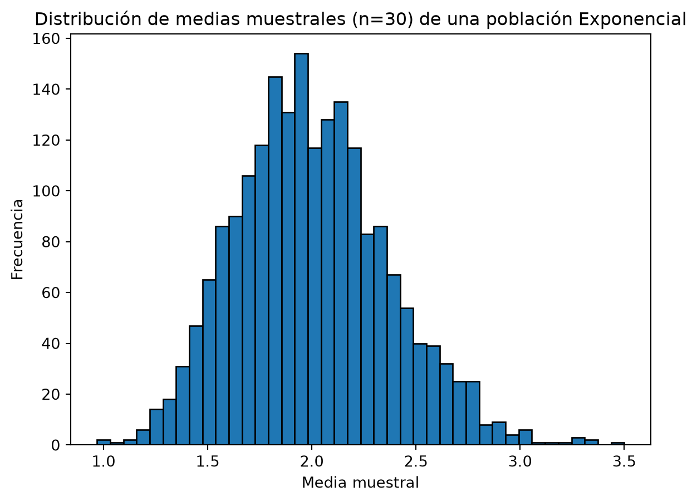

flowchart TD
A[Variable Aleatoria X] --> B[Discreta]
A --> C[Continua]
B --> B1[Bernoulli]
B --> B2[Binomial]
B --> B3[Poisson]
C --> C1[Uniforme]
C --> C2[Normal]
C --> C3[Exponencial]
6 Distribuciones de Probabilidad
6.1 3.1 Introducción
En el Módulo 2 definimos la probabilidad de sucesos individuales y vimos cómo actualizar nuestras creencias con el teorema de Bayes. Ahora damos un paso más: en vez de asignar probabilidades a sucesos sueltos, queremos describir el comportamiento completo de una variable aleatoria — todos sus valores posibles y la probabilidad asociada a cada uno.
Esto es lo que hace una distribución de probabilidad: un modelo matemático que resume de forma compacta cómo se reparte la probabilidad a lo largo de todos los resultados posibles de una variable aleatoria \(X\).
Como en los módulos anteriores, cerraremos con el puente hacia lo que viene después: el Teorema Central del Límite, la pieza que conecta las distribuciones de este módulo con la inferencia estadística (intervalos de confianza y contraste de hipótesis) del próximo módulo.
6.2 3.2 Variables Aleatorias: Discretas vs. Continuas
Recuperamos la distinción del Módulo 1 entre variables discretas y continuas, pero ahora aplicada a variables aleatorias — variables cuyo valor depende del resultado de un experimento aleatorio.
La diferencia clave está en cómo se distribuye la probabilidad:
- Discreta: la probabilidad se concentra en puntos aislados. Se describe con una función de masa de probabilidad (pmf), \(P(X = x)\).
- Continua: la probabilidad se reparte a lo largo de un intervalo continuo. Se describe con una función de densidad de probabilidad (pdf), \(f(x)\), donde \(P(X = x) = 0\) para cualquier valor puntual, y solo tienen sentido probabilidades sobre intervalos: \(P(a \le X \le b) = \int_a^b f(x)\,dx\).
En ambos casos, dos cantidades resumen la distribución:
\[ E[X] = \mu \qquad \text{(esperanza o valor esperado)} \]
\[ \text{Var}(X) = \sigma^2 = E[(X-\mu)^2] \qquad \text{(varianza)} \]
6.3 3.3 Distribuciones Discretas
6.3.1 Bernoulli
Modela un único experimento con dos resultados posibles: éxito (1) o fracaso (0), con probabilidad de éxito \(p\).
\[ P(X = x) = p^x (1-p)^{1-x}, \quad x \in \{0, 1\} \]
\[ E[X] = p \qquad \text{Var}(X) = p(1-p) \]
Ejemplo: si \(p = 0.3\) es la probabilidad de que un cliente convierta tras ver un anuncio, \(X\) es la variable que vale 1 si convierte y 0 si no.
6.3.2 Binomial
Cuenta el número de éxitos en \(n\) ensayos de Bernoulli independientes con la misma \(p\).
\[ P(X = k) = \binom{n}{k} p^k (1-p)^{n-k}, \quad k = 0, 1, \dots, n \]
\[ E[X] = np \qquad \text{Var}(X) = np(1-p) \]
Ejemplo: de 50 clientes que ven el anuncio, ¿cuántos convertirán? \(X \sim \text{Binomial}(n=50, p=0.3)\).
Código
from stats_toolkit import distributions as dist
# Probabilidad de que exactamente 15 de 50 clientes conviertan
p_15 = dist.binomial_pmf(k=15, n=50, p=0.3)
print(f"P(X = 15) = {p_15:.4f}")P(X = 15) = 0.12236.3.3 Poisson
Modela el número de eventos que ocurren en un intervalo fijo de tiempo o espacio, cuando esos eventos ocurren de forma independiente a una tasa media constante \(\lambda\).
\[ P(X = k) = \frac{\lambda^k e^{-\lambda}}{k!}, \quad k = 0, 1, 2, \dots \]
\[ E[X] = \lambda \qquad \text{Var}(X) = \lambda \]
Ejemplo: si un servidor recibe en media \(\lambda = 4\) peticiones fallidas por minuto, ¿cuál es la probabilidad de que reciba exactamente 6 en el próximo minuto?
Código
p_6 = dist.poisson_pmf(k=6, lam=4)
print(f"P(X = 6) = {p_6:.4f}")P(X = 6) = 0.1042La Poisson es, de hecho, el límite de la Binomial cuando \(n \to \infty\), \(p \to 0\) y \(np = \lambda\) se mantiene constante — útil cuando hay muchas oportunidades de que ocurra un evento raro.
6.4 3.4 Distribuciones Continuas
6.4.1 Uniforme
Todos los valores en un intervalo \([a, b]\) son igual de probables.
\[ f(x) = \frac{1}{b-a}, \quad a \le x \le b \]
\[ E[X] = \frac{a+b}{2} \qquad \text{Var}(X) = \frac{(b-a)^2}{12} \]
6.4.2 Normal (Gaussiana)
La distribución continua más importante en estadística, por su papel central en el Teorema Central del Límite (sección 3.5).
\[ f(x) = \frac{1}{\sigma\sqrt{2\pi}} e^{-\frac{(x-\mu)^2}{2\sigma^2}} \]
\[ E[X] = \mu \qquad \text{Var}(X) = \sigma^2 \]
Es simétrica alrededor de \(\mu\), y la conocida “regla 68-95-99.7” indica que aproximadamente el 68% de la probabilidad cae dentro de \(\pm 1\sigma\), el 95% dentro de \(\pm 2\sigma\), y el 99.7% dentro de \(\pm 3\sigma\).
Código
# Probabilidad acumulada P(X <= 1.96) para una Normal estándar
p = dist.normal_cdf(x=1.96, mu=0, sigma=1)
print(f"P(X <= 1.96) = {p:.4f}")P(X <= 1.96) = 0.97506.4.3 Exponencial
Modela el tiempo de espera hasta que ocurre el siguiente evento en un proceso de Poisson con tasa \(\lambda\). Es el “primo continuo” de la Poisson.
\[ f(x) = \lambda e^{-\lambda x}, \quad x \ge 0 \]
\[ E[X] = \frac{1}{\lambda} \qquad \text{Var}(X) = \frac{1}{\lambda^2} \]
Ejemplo: si los tickets de soporte llegan a una tasa de \(\lambda = 4\) por hora (Poisson), el tiempo entre tickets consecutivos sigue una Exponencial con \(E[X] = 1/4\) horas = 15 minutos.
6.5 3.5 El Teorema Central del Límite
Este es, posiblemente, el resultado más importante de toda la estadística inferencial, y el motivo por el que la distribución Normal aparece constantemente incluso cuando los datos originales no son normales.
Teorema Central del Límite (TCL): si tomamos muestras aleatorias de tamaño \(n\) (suficientemente grande) de cualquier población con media \(\mu\) y varianza \(\sigma^2\) finita, la distribución de la media muestral \(\bar{X}\) se aproxima a una distribución Normal:
\[ \bar{X} \sim \mathcal{N}\left(\mu, \frac{\sigma^2}{n}\right) \quad \text{cuando } n \to \infty \]
Lo notable es que esto es cierto sin importar la forma de la distribución original — puede ser una Exponencial muy asimétrica, una Uniforme, o cualquier otra cosa. Al promediar muchas observaciones, ese promedio tiende a comportarse como una Normal.
Podemos verlo empíricamente simulando muchas muestras de una población muy asimétrica (una Exponencial) y observando cómo se distribuyen sus medias muestrales:
Código
import matplotlib.pyplot as plt
sample_means = dist.simulate_clt(
population="exponential",
population_params={"lam": 0.5},
sample_size=30,
n_samples=2000,
seed=42,
)
plt.hist(sample_means, bins=40, edgecolor="black")
plt.title("Distribución de medias muestrales (n=30) de una población Exponencial")
plt.xlabel("Media muestral")
plt.ylabel("Frecuencia")
plt.show()
Aunque la población original (Exponencial) es muy asimétrica, la distribución de las medias muestrales ya tiene la forma característica de campana de la Normal. Esto es lo que hace posible, en el próximo módulo, construir intervalos de confianza y contrastes de hipótesis sobre la media de casi cualquier población, apoyándonos únicamente en el tamaño de la muestra.
6.6 3.6 Cierre
En este módulo hemos pasado de sucesos individuales (Módulo 2) a variables aleatorias completas: sus distribuciones discretas (Bernoulli, Binomial, Poisson) y continuas (Uniforme, Normal, Exponencial), junto con sus medidas resumen (\(E[X]\), \(\text{Var}(X)\)). El Teorema Central del Límite cierra el módulo como puente formal hacia el Módulo 4, donde usaremos estas herramientas para hacer inferencia sobre poblaciones a partir de muestras.
Continúa con el cuaderno práctico (practica.ipynb).